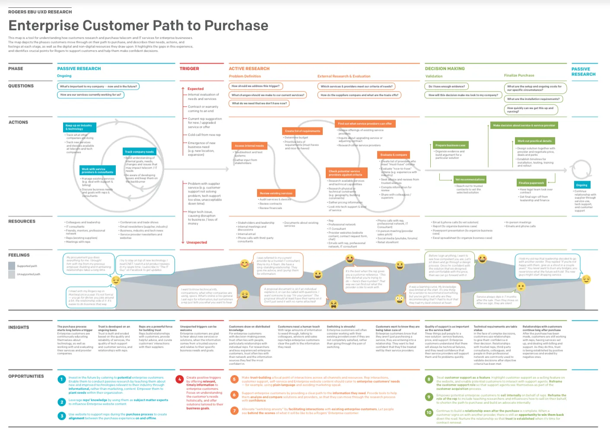
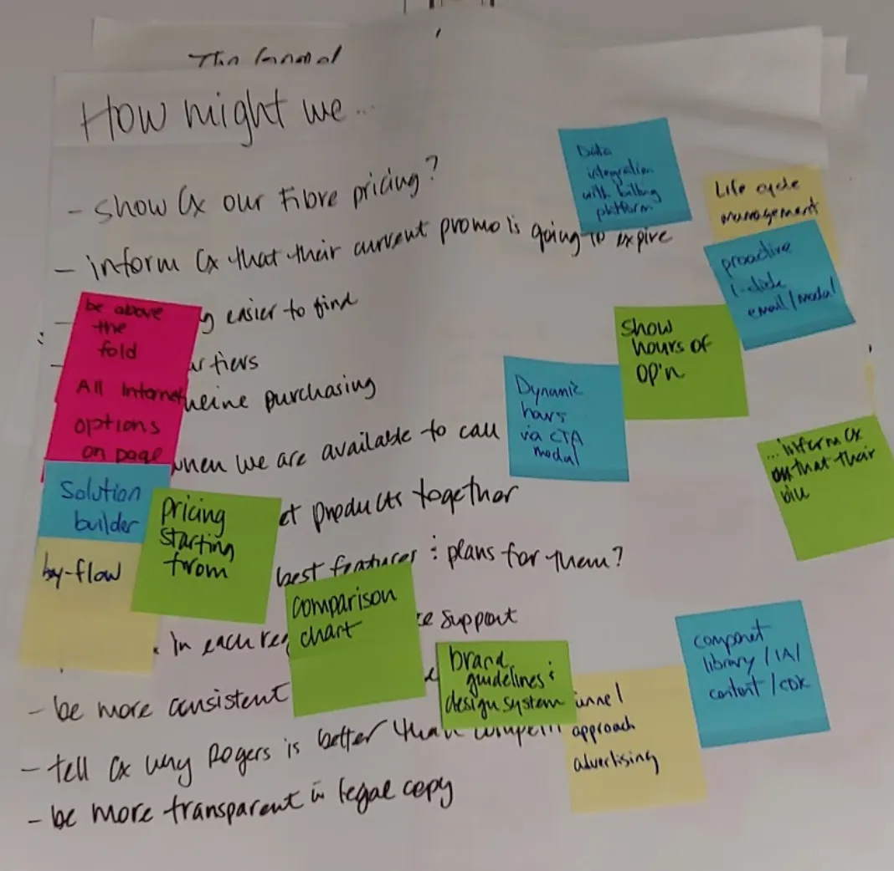
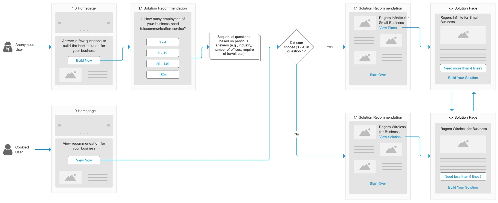
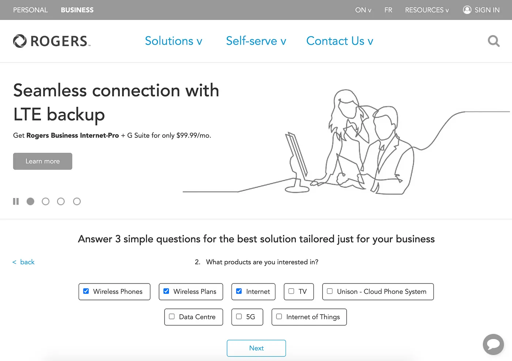
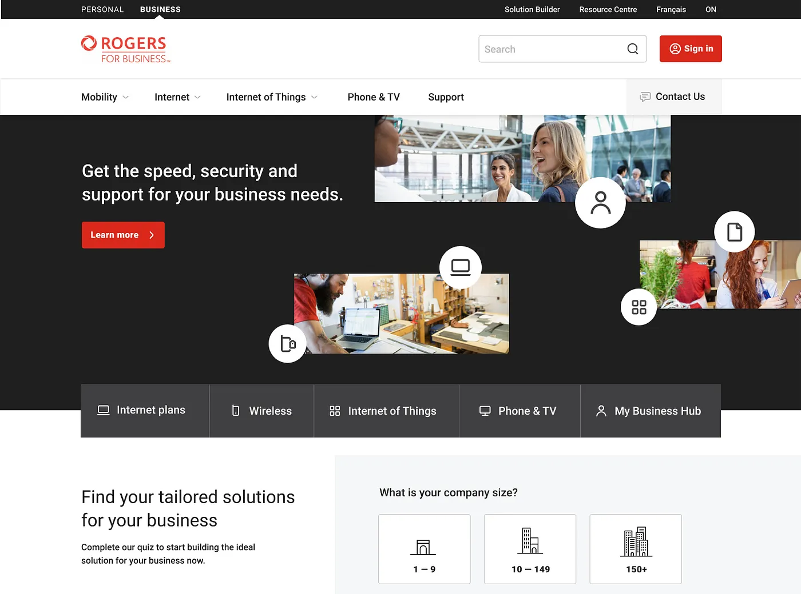

Boosting conversions on Rogers.com
by Chuan Tan · 3 min read
Overview
Rogers for Business serves a diverse clientele across various industries and business sizes. However, users often struggled to find relevant product information and were uncertain if the offerings met their specific needs.
The Challenge
The primary issue was the difficulty users faced in locating appropriate product information. Even when they did, there was ambiguity about whether the solutions aligned with their unique business requirements.
The Outcome
Implementing a design thinking approach led to significant improvements:
- Bounce rate on key product pages decreased by 7%.
- Average time spent on pages increased by 1.3 seconds.
- Conversion rates saw a 16% uplift.
Before and after of the Rogers.com website
User Research
Through comprehensive discovery studies, we developed journey maps that highlighted a crucial insight:
“The website should create positive triggers by offering relevant, timely information to enterprise customers. Focus on understanding their needs holistically, and offer solutions tailored to their business goals.”
Enterprise customer path to purchase
Design Thinking Workshop
We organized a design thinking workshop involving stakeholders from Marketing, Sales, Customer Support, Product, and Engineering. This collaborative environment fostered many innovative ideas and unified the team towards a common strategic goal.
How might we exercise
Interaction Design
A standout concept from the workshop was the “Solution Builder”—a questionnaire-style recommendation tool. Through iterative development, we crafted user story workflows and wireframes to bring this idea to life.
An example of the user story workflows
An example of the interactive wireframes
Interface Design
To enhance professionalism and user engagement, the UI designer revamped the website’s aesthetics, opting for a darker, more subdued color palette that resonated with our target audience.
An example of the UI design
Conclusion
Aligning teams in large organizations can be complex, but design thinking proved to be a powerful strategy for bridging communication gaps, fostering collaboration, and driving meaningful solutions. As the Lead Designer and Workshop Facilitator, I led the initiative—guiding cross-functional teams, shaping user flows, and crafting intuitive interactions that aligned with both user needs and business goals.
View more projects